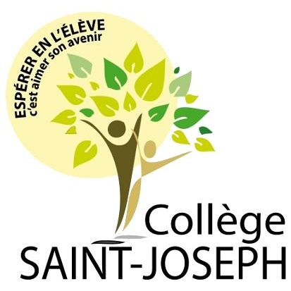

2022 - Brevet des collèges
2025 - Certification Pix
2025 - Baccalauréat (Maths / NSI)
2026 - Certification Voltaire
2026 – 1er stage au collège St Joseph
Consiste à corriger efficacement les bugs et à améliorer et ajouter des fonctionnalités en fonction des retours clients.
Consiste principalement à avoir une site vitrine, à gérer l’e-réputation.
Savoir gérer un projet, organiser les idées, travailler avec une équipe et s’adapter à une date limite.
Consiste à savoir travailler en autonomie, sur différents projets et sur différents environnements de travail.